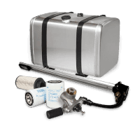
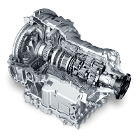
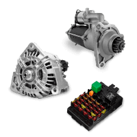
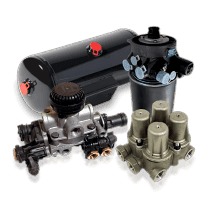

El sistema eléctrico de un camión es uno de los sistemas más
importantes del vehículo. Es responsable de proporcionar energía
a todos los componentes eléctricos del camión, como el motor,
la iluminación, el aire acondicionado y el sistema de audio.
El sistema eléctrico de un camión está compuesto por una serie
de componentes incluyendo:
|

Bateria y Combustible |

Caja de Cambio |
|

Acesorios Electricos |

Sistema de Aire |
Batería descargada: La batería puede descargarse por una serie de razones,
como dejar las luces encendidas o usar componentes eléctricos que consumen mucha energía.
Fusible fundido: Un fusible puede fundirse si se produce una sobrecarga eléctrica en el
cable o el componente eléctrico al que está conectado.
Cableado defectuoso: El cableado puede dañarse por una serie de factores, como el calor, el frío,
la humedad y la fricción.
Componente eléctrico defectuoso: Un componente eléctrico puede dañarse por una serie de factores, como el uso excesivo, el desgaste natural y la exposición a elementos.